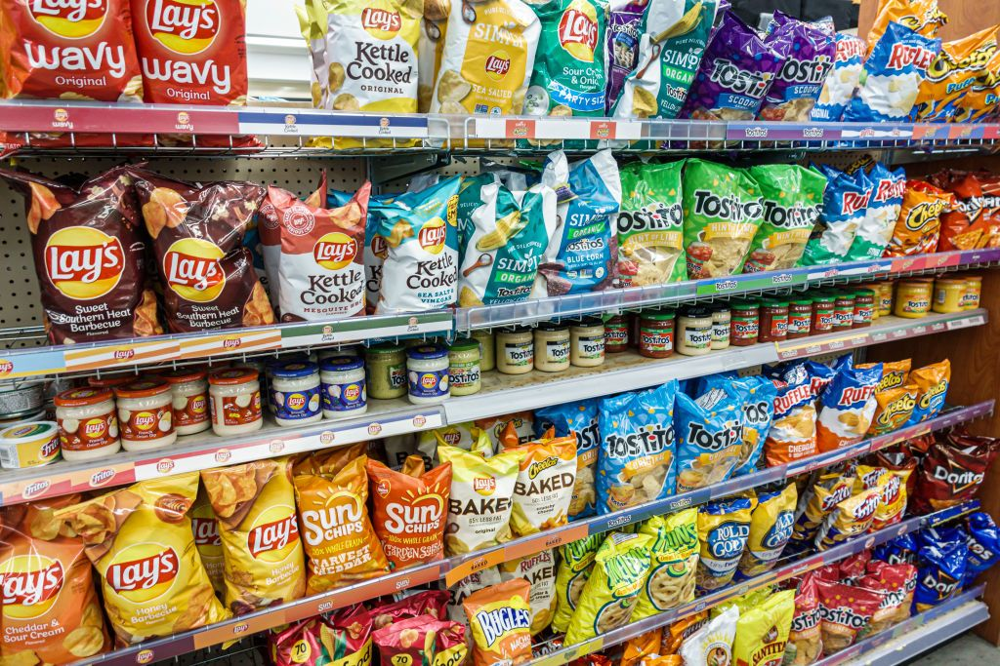

For the first task, I scraped data from a website of reviews regarding British Airways.
I also clean and explore data using sentiment analysis, VADER and wordcloud.
For the second task, I built a predictive model to understand factors that influence buying behaviour.

In this virtual project by Quantium, I clean and explore data given by a client,
who wants to better understand the types of customers who purchase Chips and their purchasing behaviour within the region.

In this project I take raw housing data and transform it in Microsoft SQL Server to make it more usable for analysis.

In this project we use MySQL Server to explore global layoffs data.

In this project, I cleaned the data, and obtained various pivot tables to get visualisations of Bike Sales

Tableau Dashboards for projects on COVID 19, and AirBnb

In this project we use Microsoft SQL Server to explore global COVID 19 data.

In this project I look at what variables effect the gross revenue from movies.